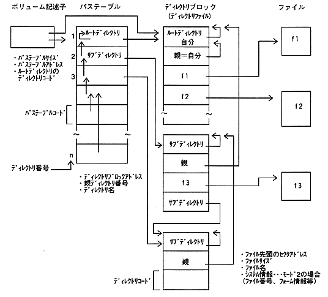

-Volume descriptor: Located from the top of the data area. Fixed length depending on type. -Path table: A set of path table records. * The size and address of the path table are recorded in the volume descriptor. -Path table record: Corresponds to one directory (root, sub). The record position is the directory number. (1 to n) Information about the directory is described in the directory block. Directory block: A collection of directory records. The directory block is regarded as one file. (Directory file) The directory block size is the size of the directory record at the head of the block. Recorded in file size. (Size of your directory file) -Directory record: Corresponds to one file (including directories).